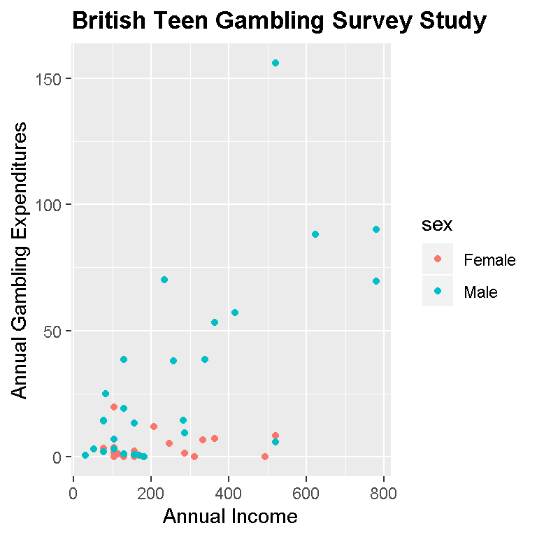
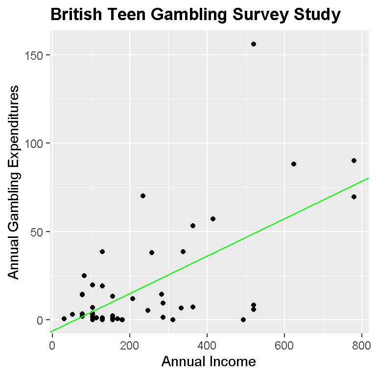
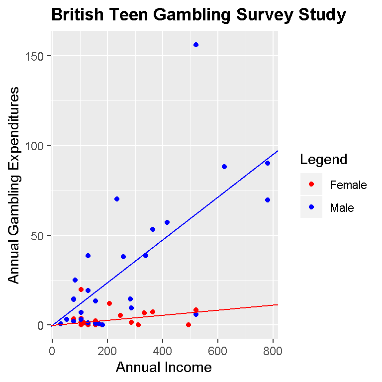

Hi. In this post, I will discuss fitting a linear model in the statistical program R with the ggplot2 data visualization package.
The dataset chosen here is teengamb from the R package called faraway. A survey was conducted to study teenage gambling in Britain. One can find documentation of this data package with ?faraway.
In the teengamb dataset the sex variable is 0 for males and 1 for females, status is the socioeconomic status score dependent of the parents’ job(s), income is in pounds per week, verbal is the verbal score in words out of 12 and the gamble variable is the annual gambling expenditure in pounds.
The variables of interest are income and gamble. We want to see the relationship between annual incomes versus annual gambling expenses.
The code and output below shows loading the libraries and a peek of the data.
# Fitting a linear model with ggplot2 in R:
# Accessing the data package faraway
library(faraway)
library(ggplot2)
# Survey was conducted to study teen gambling:
# This data frame contains the following columns:
# sex 0=male, 1=female
# status Socioeconomic status score based on parents' occupation
# income in pounds per week
# verbal verbal score in words out of 12 correctly defined
# gamble expenditure on gambling in pounds per year
# Source: Ide-Smith & Lea, 1988, Journal of Gambling Behavior, 4, 110-118
gamb_data <- data.frame(teengamb)
head(gamb_data)## sex status income verbal gamble
## 1 1 51 2.00 8 0.0
## 2 1 28 2.50 8 0.0
## 3 1 37 2.00 6 0.0
## 4 1 28 7.00 4 7.3
## 5 1 65 2.00 8 19.6
## 6 1 61 3.47 6 0.1str(gamb_data)## 'data.frame': 47 obs. of 5 variables:
## $ sex : int 1 1 1 1 1 1 1 1 1 1 ...
## $ status: int 51 28 37 28 65 61 28 27 43 18 ...
## $ income: num 2 2.5 2 7 2 3.47 5.5 6.42 2 6 ...
## $ verbal: int 8 8 6 4 8 6 7 5 6 7 ...
## $ gamble: num 0 0 0 7.3 19.6 0.1 1.45 6.6 1.7 0.1 ...
The gambling data set has 47 observations (rows) and 5 variables (columns). Getting the summary of the dataset will show minimums, maximums, mean, median and more for each variable.
The teengamb dataset could use a few tune-ups. The income is in pounds per week and the gambling spending is in pounds per year. Both variables should be on the same scale. Also, we would like to convert the 0s and 1s to Male and Female respectively.
The code is as follows:
# Note that income is in pounds per week while spending is in pounds per year.
# Turn 0s to 'Male' for males and 1s to 'Female' for females in the Sex column:
gamb_data['sex'][gamb_data['sex'] == 0] <- 'Male'
gamb_data['sex'][gamb_data['sex'] == 1] <- 'Female'
# Want to turn weekly income into annual income to compare annual gambling expenditure:
gamb_data['income'] <- gamb_data['income'] * 52
# Male case data and female case data:
gamb_male <- subset(gamb_data, sex == "Male")
gamb_female <- subset(gamb_data, sex == "Female")
After fixing up the data, we can produce linear models.
We can produce linear models with combine the males and females and we can fit 2 linear models with one for males and the other for females.
Before the linear models, we start with a scatterplot of our data:
# Plotting the data for both genders of income vs gambling spending.
#plot(x = gamb_data$income, y = gamb_data$gamble)
p <- ggplot(aes(x = income, y = gamble), data = gamb_data)
# Initial Plot:
p + geom_point(aes(group = sex, colour = sex)) +
xlab("Annual Income") +
ylab("Annual Gambling Expenditures") +
ggtitle("British Teen Gambling Survey Study") +
theme(plot.title = element_text(lineheight=.8, face="bold"))
Based on our sample and this plot, we can see that females overall have lower annual gambling expenditures than males. Many of the extreme values or outliers are from males. One can see that it is likely that if we were to fit a linear model to this data, the line would be upward sloping (positive). This would mean that as annual income increases, the annual gambling expenditure would increase as well.
We now build the linear models and extract model coefficients such as the slope and intercept and use them for plotting in ggplot2.
The lm( dep_var ~ indep_var) function is used to fit a linear model while the coef() function extracts the slope and intercept of the linear model.
# Building linear models (full model, male case, female case):
model <- lm(gamb_data$gamble ~ gamb_data$income)
model_male <- lm(gamb_male$gamble ~ gamb_male$income)
model_female <- lm(gamb_female$gamble ~ gamb_female$income)
# Extract coefficients (slope and intercept) of the linear models:
coef_model <- coef(model); coef_model## (Intercept) gamb_data$income
## -6.3245590 0.1061632coef_male <- coef(model_male); coef_male## (Intercept) gamb_male$income
## -2.6596291 0.1253485coef_female <- coef(model_female); coef_female## (Intercept) gamb_female$income
## 3.139973694 0.003363799# Building a plot with linear models (male vs female) :
p + geom_point(aes(group = sex, colour = sex)) +
geom_abline(slope = coef_male[2], intercept = coef_male[1], colour = 'blue') +
geom_abline(slope = coef_female[2], intercept = coef_female[1], colour = 'red') +
xlab("Annual Income") +
ylab("Annual Gambling Expenditures") +
scale_colour_manual(values = c("red","blue"),
labels = c("Male", "Female"),
name = "Legend") +
ggtitle("British Teen Gambling Survey Study") +
theme(plot.title = element_text(lineheight=.8, face="bold"))
# Full model (male and female):
p + geom_point() +
geom_abline(slope = coef_model[2], intercept = coef_model[1], colour = 'green') +
xlab("Annual Income") +
ylab("Annual Gambling Expenditures") +
ggtitle("British Teen Gambling Survey Study") +
theme(plot.title = element_text(lineheight=.8, face="bold"))
We can easily see that our model (blue and red dots) shows that males spend more on gambling as annual incomes increases compared to females.
The model with just black dots is the overall model where males and females are together. Again, as annual income increases the gambling spending increases.
Formally, we can express the model in a more mathematical way.
For the male case in blue the fitted linear model can be expressed as:
\[Annual Gambling Exp. = -2.6546 + 0.0024 * MaleIncome\]
For the female case in red, the fitted linear model can be expressed as:
\[Annual Gambling Exp. = 3.1400 + 0.0001 * FemaleIncome\]
(6.468844e-05 is rounded to 0.0001 in 4 decimal places)
For the overall linear model, the fitted linear model is:
\[Annual Gambling Exp. = -6.3246 + 0.0020 * AnnualIncome\]
Based on the context our data, we cannot have negative income and 0 income should relate to 0 gambling spending. (One could argue that you can have 0 income and still gamble with other people’s money but that is not assumed) We should be running a linear model through the origin point of (0, 0).
To run a regression through the origin we add a 0 and a + with the independent variable in the lm() function in R.
The code will be similar as before but with different outputs.
# Analysis:
# But we cannot have negative income so we run a linear model through origin:
# 0 income means 0 gambling expenses
# We fit a linear model through the origin:
linear_model_origin <- lm(gamb_data$gamble ~ 0 + gamb_data$income)
model_male_origin <- lm(gamb_male$gamble ~ 0 + gamb_male$income)
model_female_origin <- lm(gamb_female$gamble ~ 0 + gamb_female$income)
# Extract slope:
coef_origin <- coef(linear_model_origin); coef_origin## gamb_data$income
## 0.08950466coef_male_origin <- coef(model_male_origin); coef_male_origin## gamb_male$income
## 0.1191204coef_female_origin <- coef(model_female_origin); coef_female_origin## gamb_female$income
## 0.0139747# Plotting Through Origin (Male vs Female):
# Full model (male vs female):
p + geom_point(aes(group = sex, colour = sex)) +
geom_abline(slope = coef_male_origin, intercept = 0, colour = 'blue') +
geom_abline(slope = coef_female_origin, intercept = 0, colour = 'red') +
xlab("Annual Income") +
ylab("Annual Gambling Expenditures") +
scale_colour_manual(values = c("red","blue"),
labels = c("Female", "Male"),
name = "Legend") +
ggtitle("British Teen Gambling Survey Study") +
theme(plot.title = element_text(lineheight=.8, face="bold"))
# Full model through origin (male and female):
p + geom_point() +
geom_abline(slope = coef_origin, intercept = 0, colour = 'green') +
xlab("Annual Income") +
ylab("Annual Gambling Expenditures") +
ggtitle("British Teen Gambling Survey Study") +
theme(plot.title = element_text(lineheight=.8, face="bold"))
For the overall model (black dots and green line), the linear model is:
\[Annual Gambling Exp. = 0 + 0.0895 * AnnualIncome\]
The fitted linear model for the male case is:
\[Annual Gambling Exp. = 0 + 0.1191 * MaleIncome\]
For the female case, the linear model is:
\[Annual Gambling Exp. = 0 + 0.0140 * FemaleIncome\]
(Numeric values are rounded to 4 decimal places.)
The linear models through the origin are not much different than the linear models before. It does make more sense to fit a model through the origin based on the context of the data.
Based on the sample of 47 males and females in the survey study, females have lower gambling expenses compared to males. Overall, the more income one has, the higher the gambling expenses will be (from a likely male over female).
Remember that statistics is based on partial information. It is dangerous and most likely not true that as income increases then gambling spending increases for every British teenager. If one wants more information, then a larger sample would be needed which comes at a cost.
More variables could have been used for the linear models such as the socioeconomic status variable. That would be a multiple linear regression case.
The preferred graph would be the one with the male and female cases. It provides a good visual between males and females in terms of gambling spending.